Cayenne Getting Started Guide
1. Setup
In this tutorial we’ll create a database schema, create a Cayenne model from it, generate Java classes from the model, and write a small application that creates, selects and deletes persistent objects. The model is created with CayenneModeler, a GUI tool that comes with Cayenne. If you are using the Claude Code AI agent, each modeling step also shows how to get the same result by asking Claude.
Basics
-
Cayenne 5.0 requires JDK 21 or newer.
-
Maven is used to build and run the tutorial application. All the commands in this tutorial are run in a terminal.
CayenneModeler
CayenneModeler is the GUI tool used in this tutorial to import the database schema, to edit the model and to generate Java classes. See the Running CayenneModeler chapter of the Cayenne Guide on how to download and start it. The welcome screen of the Modeler looks like this:
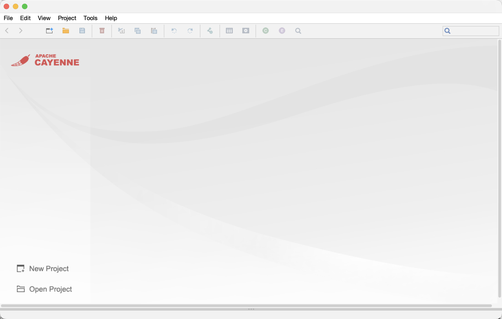
Claude Code (optional)
To follow the "With Claude" alternatives, install Claude Code and make it Cayenne-aware with the two pieces described in the Agentic Coding chapter of the Cayenne Guide:
-
The
apache-cayenneClaude Code plugin. It gives Claude the skills for most of the steps in this tutorial - importing the database and keeping the model in sync with it, cleaning up the names in the model, editing the model, generating Java classes, as well as writing queries and setting up Cayenne runtime in the application code. -
The Cayenne MCP server, that the plugin skills use to run the DB import and the class generation, and to open CayenneModeler. It comes with CayenneModeler, so you still need to download the Modeler.
MySQL
MySQL database server is used as a database in this tutorial. Any other database that has a JDBC driver would work just as well, with the appropriate changes to the driver name and the connection URL.
If you don’t have MySQL installed, an easy way to get it is to run it in Docker. Start a MySQL container, publishing its port on the local machine (replace your-password with a root password of your choice), and give the server a few seconds to start:
$ docker run -d --name cayenne-mysql -e MYSQL_ROOT_PASSWORD=your-password -p 3306:3306 mysql:8.4
The database is now available at 127.0.0.1:3306, with root as the user name. When you are done with the tutorial, the container can be removed with docker rm -f cayenne-mysql. Here is the DB schema that will be used in this tutorial:
CREATE SCHEMA IF NOT EXISTS cayenne_demo; USE cayenne_demo;
CREATE TABLE artist (DATE_OF_BIRTH DATE NULL, ID INT NOT NULL AUTO_INCREMENT, NAME VARCHAR(200) NULL, PRIMARY KEY (ID)) ENGINE=InnoDB;
CREATE TABLE gallery (ID INT NOT NULL AUTO_INCREMENT, NAME VARCHAR(200) NULL, PRIMARY KEY (ID)) ENGINE=InnoDB;
CREATE TABLE painting (ARTIST_ID INT NULL, GALLERY_ID INT NULL, ID INT NOT NULL AUTO_INCREMENT, NAME VARCHAR(200) NULL, PRIMARY KEY (ID)) ENGINE=InnoDB;
ALTER TABLE painting ADD FOREIGN KEY (ARTIST_ID) REFERENCES artist (ID) ON DELETE CASCADE;
ALTER TABLE painting ADD FOREIGN KEY (GALLERY_ID) REFERENCES gallery (ID) ON DELETE CASCADE;Save it to a file and import to your database. You can do it with any tools you are comfortable with, e.g.:
# CLI client $ mysql < cayenne_demo.sql # Docker $ docker exec -i cayenne-mysql mysql -uroot -pyour-password < cayenne_demo.sql
Maven Project
Create a directory for the tutorial project with the standard Maven layout:
$ mkdir -p cayenne-tutorial/src/main/java $ mkdir -p cayenne-tutorial/src/main/resources $ cd cayenne-tutorial
In the project directory create a pom.xml file that declares the dependencies on Cayenne, the MySQL JDBC driver and a simple logger (Cayenne uses SLF4J logging API, and here we’ll use a backend that prints everything to the console):
<project xmlns="http://maven.apache.org/POM/4.0.0">
<modelVersion>4.0.0</modelVersion>
<groupId>org.example.cayenne</groupId>
<artifactId>cayenne-tutorial</artifactId>
<version>1.0-SNAPSHOT</version>
<properties>
<maven.compiler.release>21</maven.compiler.release>
<project.build.sourceEncoding>UTF-8</project.build.sourceEncoding>
</properties>
<dependencies>
<dependency>
<groupId>org.apache.cayenne</groupId>
<artifactId>cayenne</artifactId>
<version>5.0</version>
</dependency>
<dependency>
<groupId>com.mysql</groupId>
<artifactId>mysql-connector-j</artifactId>
<version>9.7.0</version>
</dependency>
<dependency>
<groupId>org.slf4j</groupId>
<artifactId>slf4j-simple</artifactId>
<version>2.0.17</version>
</dependency>
</dependencies>
</project>2. Importing the Database
Now we have everything ready, and can proceed to creating a Cayenne model from our MySQL database. This process is called "reverse engineering" or "DB import".
With CayenneModeler
Install the JDBC Driver
The Modeler needs a JDBC driver to connect to the database. Select Tools > Preferences from the menu and go to the "Classpath" section:
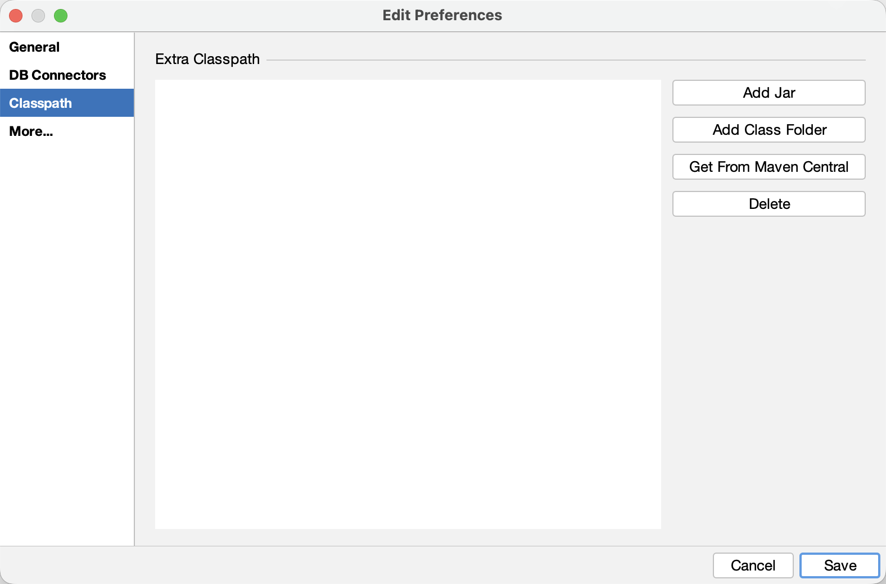
If you already have the MySQL driver jar somewhere on your machine, click "Add Jar" and select it. Otherwise click "Get From Maven Central", enter the driver coordinates and click "Download":
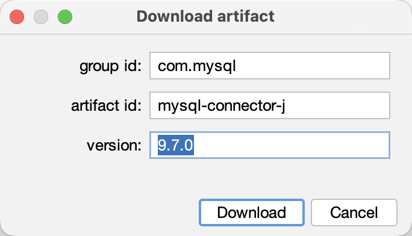
Click "Save" to close the preferences dialog. This only needs to be done once, as the Modeler remembers its classpath.
Create a Project and a DataMap
Click on the "New Project" button on the welcome screen (or select File > New Project from the menu). A new mapping project will appear. Now select Project > Create DataMap. A DataMap is an object that holds all the mapping information. You can leave all the DataMap defaults unchanged except for one - "Default Java Package". Enter org.example.cayenne.persistent. This name will later be used for all persistent classes:
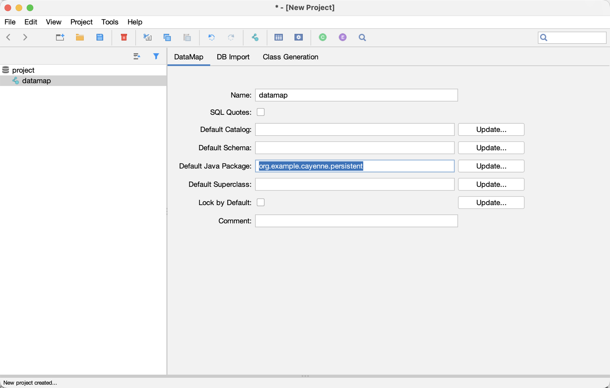
Connect to the Database
With the DataMap selected, switch to the "DB Import" tab. The left-hand side of the tab shows the import rules stored in the project, and the right-hand side shows the database contents:
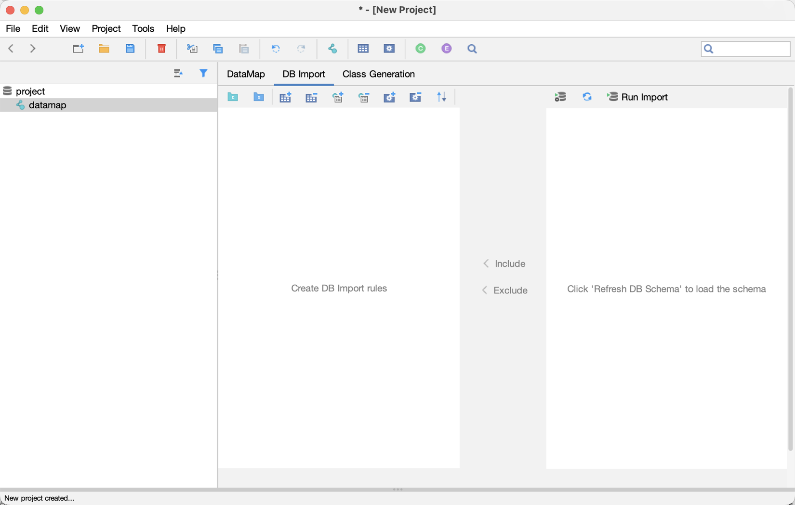
Click on the "Configure Connection" button (the first one in the toolbar on the right) and enter the connection settings:
-
JDBC Driver:
com.mysql.cj.jdbc.Driver -
DB URL:
jdbc:mysql://127.0.0.1:3306/cayenne_demo -
User Name and Password of your MySQL user.
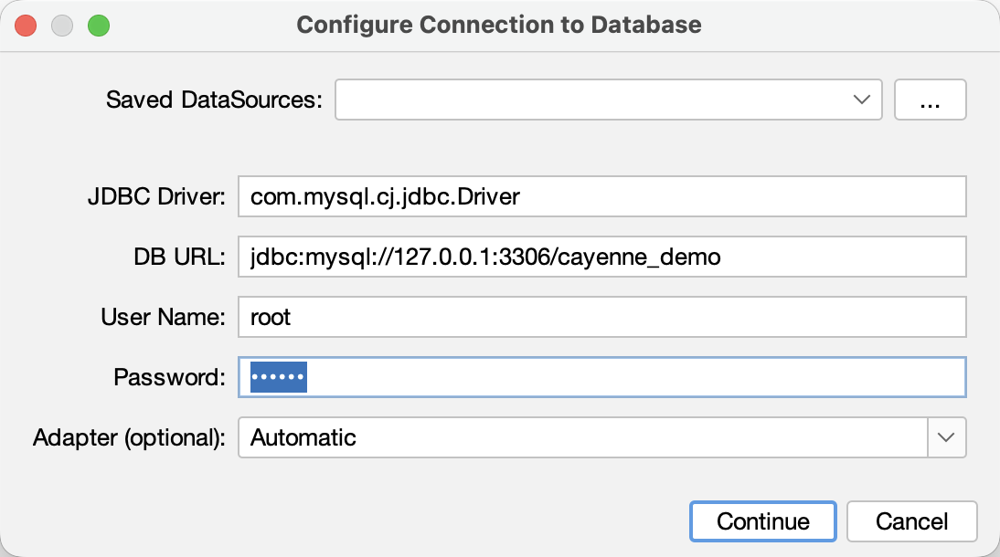
Click "Continue". The Modeler checks the connection and saves it in its local preferences. The connection information (including the password) is not stored in the project files. Now click on the "Refresh DB Schema" button next to "Configure Connection" to load the database contents.
Run the Import
Select the cayenne_demo catalog on the right and click "Include". This creates a rule in the project to import everything from this catalog:
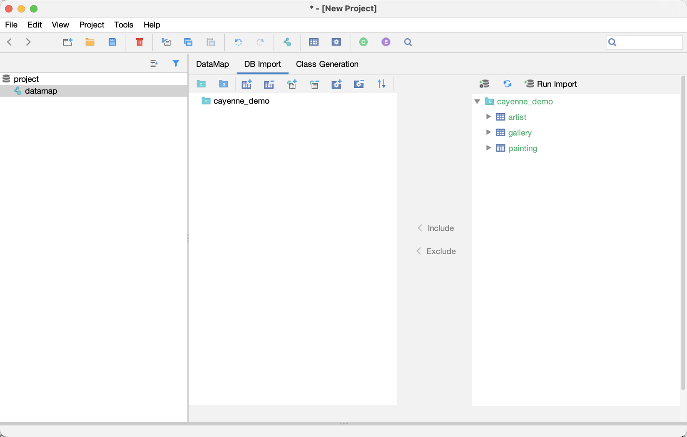
Now click "Run Import". The Modeler shows the changes that it has made to the model:
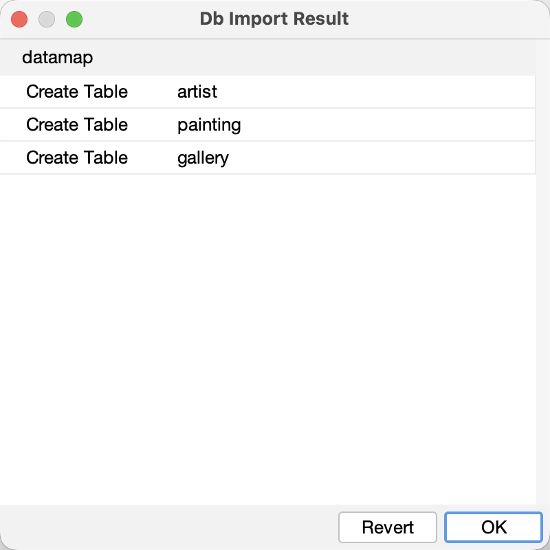
Click "OK". The DataMap now has a DbEntity for each table (artist, gallery, painting), describing its columns and relationships, and a matching ObjEntity for each DbEntity (Artist, Gallery, Painting), describing a Java class, with its attributes and relationships:
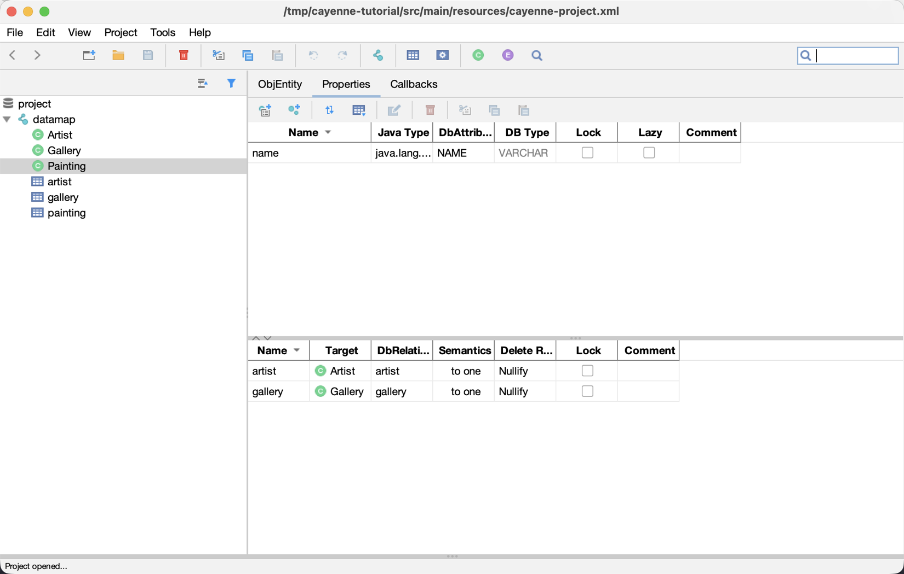
Save the Project
Select File > Save and choose the src/main/resources directory of the tutorial project. The Modeler creates two files there: cayenne-project.xml (the project descriptor) and datamap.map.xml (the DataMap). Both should be committed to the version control system along with the rest of your code.
With Claude
With the apache-cayenne plugin installed (see Claude Code (optional)), Claude already knows how to do most of the steps in this tutorial, so you only need to describe what you want. There is one exception though. Claude does not know how to connect to your database, and it should not. The connection settings (including the password) are kept in the CayenneModeler preferences on your machine, and the Cayenne MCP server uses them to run the import on Claude’s behalf. So start in the Modeler, following these steps from the previous section:
-
Save the Project (you haven’t imported anything yet, but Claude needs the project files to work with)
Now start Claude Code in the tutorial project directory and ask it to do the import:
Import the "cayenne_demo" MySQL database into the Cayenne project in src/main/resources
Claude runs the import using the connection saved by the Modeler, and reports the entities that were added to the model. The result is the same as with "Run Import" in the Modeler, so from here on you can mix the two approaches.
3. Keeping the Model in Sync
A database schema is rarely final. In this chapter we’ll see how to bring the schema changes into the model, how to customize the model, and how to keep some parts of the database out of it.
Updating the Model
Let’s imagine that over some time our database schema has evolved, and we need to synchronize it with our model. We’ll use the following SQL script to alter the demo database:
CREATE TABLE cayenne_demo.painting_info (INFO VARCHAR(255) NULL, PAINTING_ID INT NOT NULL, PRIMARY KEY (PAINTING_ID)) ENGINE=InnoDB;
ALTER TABLE cayenne_demo.gallery ADD COLUMN FOUNDED_DATE DATE;
ALTER TABLE cayenne_demo.painting_info ADD FOREIGN KEY (PAINTING_ID) REFERENCES cayenne_demo.painting (ID);With CayenneModeler
Open the project in the Modeler (if you closed it, use File > Open Project and select cayenne-project.xml), select the DataMap, go to the "DB Import" tab, and click "Run Import" again. The import rules are stored in the project, and the connection is remembered by the Modeler, so there is nothing else to configure. Only the differences between the database and the model are imported:
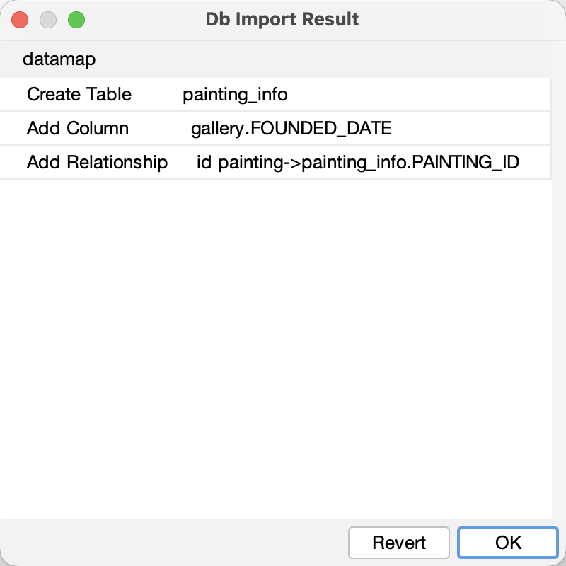
A new DbEntity and a new ObjEntity are in place, as well as a new foundedDate attribute of Gallery. Save the project.
Customizing the Model
The import creates the Java side of the model (ObjEntities, their attributes and relationships) using a set of naming conventions and defaults. Often there is a need to customize it to better fit your application. Such changes are not lost when you run the import again. It only overrides the changes made to the DB side of the model (DbEntities).
We’ll make two changes. First, the relationship from Painting to the new PaintingInfo got a rather meaningless name id. In the Modeler select the Painting ObjEntity, go to the "Properties" tab, double-click on the relationship name and change it to info.
Second, we’d like all the paintings of an artist to be deleted together with the artist. Select the Artist ObjEntity, go to the "Properties" tab, and change the "Delete Rule" of the paintings relationship from "Deny" to "Cascade":
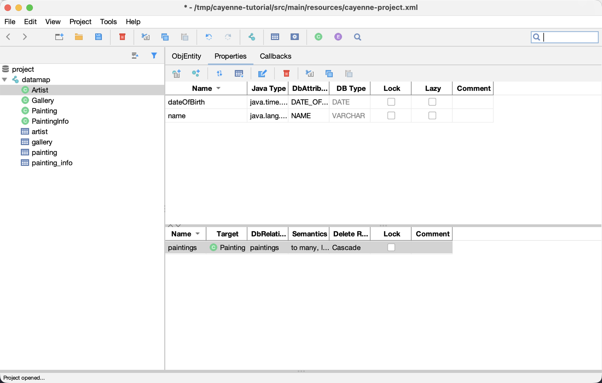
Save the project. If you run the import again now, it finds nothing to do, and your changes stay intact.
With Claude simply describe the change:
In the Cayenne model rename the "id" relationship of "Painting" to "info", and change the delete rule of "Artist.paintings" to "Cascade".
Filtering
Not everything in the database belongs in the model. Let’s add some things to our database that the application should not know about:
CREATE TABLE cayenne_demo.legacy_painting_info (ID INT NOT NULL AUTO_INCREMENT, INFO VARCHAR(255) NULL, PAINTING_ID INT NOT NULL, PRIMARY KEY (ID)) ENGINE=InnoDB;
ALTER TABLE cayenne_demo.artist ADD COLUMN __service_column INT;
ALTER TABLE cayenne_demo.gallery ADD COLUMN __service_column INT;
ALTER TABLE cayenne_demo.painting ADD COLUMN __service_column INT;With CayenneModeler
On the "DB Import" tab click "Refresh DB Schema" and expand cayenne_demo on the right to see the new table and columns. Select the legacy_painting_info table and click "Exclude". This adds an "exclude table" rule to the cayenne_demo catalog on the left.
To exclude a column from all the tables of the catalog, select cayenne_demo on the left, click on the "Exclude Column" button in the toolbar above it, and type __service_column as the name of the new rule. The rule names are regular expressions, so a single rule can match multiple tables or columns. Note how the excluded column is grayed out on the right:
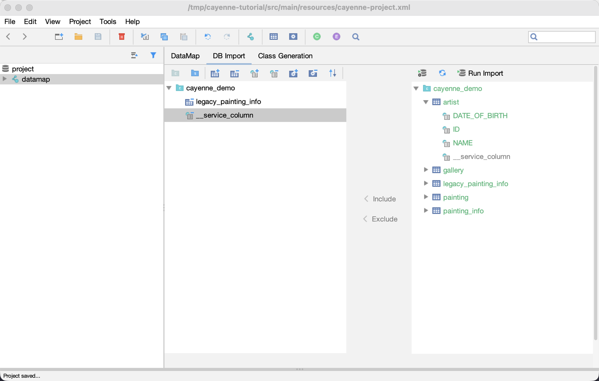
Click "Run Import". We don’t get any changes in the model, exactly as expected:
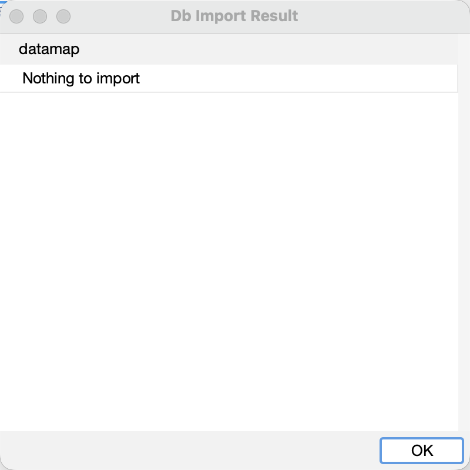
Save the project to keep the new rules.
4. Generating Java Classes
Now that the model is ready, let’s generate the Java classes that will actually be used in the application.
With CayenneModeler
Select the DataMap and go to the "Class Generation" tab. The Modeler has already figured out that the classes should go to the src/main/java directory of the project, and the default values of other settings will do for our case:
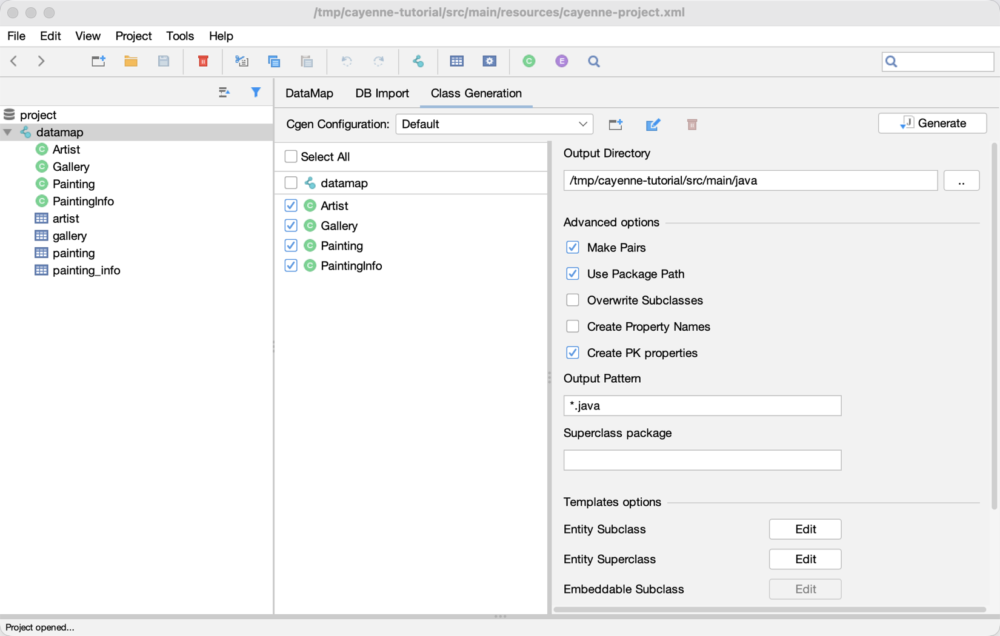
Click "Generate". The following files are created:
src/main/java/org/example/cayenne/persistent/Artist.java src/main/java/org/example/cayenne/persistent/Gallery.java src/main/java/org/example/cayenne/persistent/Painting.java src/main/java/org/example/cayenne/persistent/PaintingInfo.java src/main/java/org/example/cayenne/persistent/auto/_Artist.java src/main/java/org/example/cayenne/persistent/auto/_Gallery.java src/main/java/org/example/cayenne/persistent/auto/_Painting.java src/main/java/org/example/cayenne/persistent/auto/_PaintingInfo.java
Save the project, as the class generation settings are also a part of it.
Inspecting and Customizing the Classes
There are two classes for each entity. If you inspect any of them (e.g. org.example.cayenne.persistent.Artist), you’ll see that it extends a class with the name that starts with underscore (org.example.cayenne.persistent.auto._Artist), which in turn extends from org.apache.cayenne.PersistentObject. Splitting each persistent class into a user-customizable subclass (Xyz) and a generated superclass (_Xyz) is a useful technique to avoid overwriting the custom code. Whenever the model changes, you would generate the classes again. This overwrites the superclasses, but never touches the existing subclasses.
Let’s for instance add a utility method to the Artist class that sets the date of birth, taking a String argument for the date. It will be preserved even if the model changes later:
public class Artist extends _Artist {
static final String DEFAULT_DATE_FORMAT = "yyyyMMdd";
/**
* Sets date of birth using a string in format yyyyMMdd.
*/
public void setDateOfBirthString(String yearMonthDay) {
if (yearMonthDay == null) {
setDateOfBirth(null);
return;
}
LocalDate date;
try {
DateTimeFormatter formatter = DateTimeFormatter
.ofPattern(DEFAULT_DATE_FORMAT);
date = LocalDate.parse(yearMonthDay, formatter);
} catch (DateTimeParseException e) {
throw new IllegalArgumentException(
"A date argument must be in format '"
+ DEFAULT_DATE_FORMAT + "': " + yearMonthDay);
}
setDateOfBirth(date);
}
}To make sure that everything is in order, compile the project:
$ mvn compile
5. Writing the Application
Getting Started with ObjectContext
In this section we’ll write a simple main class to run our application, and get a brief introduction to Cayenne ObjectContext.
Creating the Main Class
Create a file called Main.java in the src/main/java/org/example/cayenne directory with a standard main() method:
package org.example.cayenne;
public class Main {
public static void main(String[] args) {
}
}The first thing you need to be able to access the database is to create a CayenneRuntime object (which is essentially a wrapper around Cayenne stack), and use it to obtain an instance of an ObjectContext. The runtime needs to know which database to connect to. The database connection is not a part of the mapping project. It is defined in the code as a DataSource:
package org.example.cayenne;
import org.apache.cayenne.ObjectContext;
import org.apache.cayenne.datasource.CayenneDataSource;
import org.apache.cayenne.runtime.CayenneRuntime;
import javax.sql.DataSource;
public class Main {
public static void main(String[] args) {
// TODO: change to your actual username and password
DataSource dataSource = CayenneDataSource.of("jdbc:mysql://127.0.0.1:3306/cayenne_demo")
.userName("root")
.password("your-password")
.pool(1, 1)
.build();
CayenneRuntime cayenneRuntime = CayenneRuntime.of()
.addConfig("cayenne-project.xml")
.defaultDataNode(dataSource)
.build();
ObjectContext context = cayenneRuntime.newContext();
}
}ObjectContext is an isolated "session" in Cayenne that provides all needed API to work with data. ObjectContext has methods to execute queries and manage persistent objects. We’ll discuss them in the following sections. When the first ObjectContext is created in the application, Cayenne loads XML mapping files and creates a shared access stack that is later reused by other ObjectContexts.
Running the Application
Let’s check what happens when you run the application:
$ mvn compile exec:java -Dexec.mainClass=org.example.cayenne.Main
In the console you’ll see output similar to this, indicating that Cayenne stack has been started (long lines are wrapped here for readability):
[main] INFO org.apache.cayenne.datasource.DriverDataSource - +++ Connecting: SUCCESS.
[main] INFO org.apache.cayenne.configuration.xml.XMLDataChannelDescriptorLoader - Loading
XML configuration resource from file:/.../cayenne-project.xml
[main] INFO org.apache.cayenne.configuration.xml.XMLDataChannelDescriptorLoader - Loading
XML DataMap resource from file:/.../datamap.map.xml
[main] INFO org.apache.cayenne.configuration.runtime.DataDomainProvider - setting DataNode
'cayenne-0' as default, used by all unlinked DataMaps
Creating Objects
Now we’ll create a bunch of objects and save them to the database. An object is created and registered with ObjectContext using the newObject method. Objects must be registered with an ObjectContext to be persisted and to allow setting relationships with other objects. Add this code to the main method of the Main class:
Artist picasso = context.newObject(Artist.class);
picasso.setName("Pablo Picasso");
picasso.setDateOfBirthString("18811025");Note that at this point the picasso object is only stored in memory and is not saved in the database. Let’s continue by adding a Metropolitan Museum Gallery object and a few Picasso paintings:
Gallery metropolitan = context.newObject(Gallery.class);
metropolitan.setName("Metropolitan Museum of Art");
Painting girl = context.newObject(Painting.class);
girl.setName("Girl Reading at a Table");
Painting stein = context.newObject(Painting.class);
stein.setName("Gertrude Stein");Now we can link the objects together, establishing relationships. Note that in each case below relationships are automatically established in both directions (e.g. picasso.addToPaintings(girl) has exactly the same effect as girl.setArtist(picasso)).
picasso.addToPaintings(girl);
picasso.addToPaintings(stein);
girl.setGallery(metropolitan);
stein.setGallery(metropolitan);Now let’s save all five new objects, in a single method call:
context.commitChanges();Run the application again. The new output will show a few actual DB operations:
...
[main] INFO org.apache.cayenne.dba.AutoAdapter - Detected and installed adapter:
org.apache.cayenne.dba.mysql.MySQLAdapter
[main] INFO cayenne-sql - tx started
[main] INFO cayenne-sql - INSERT INTO cayenne_demo.artist(DATE_OF_BIRTH, NAME) VALUES(?, ?)
| bind:[DATE_OF_BIRTH:'1881-10-25',NAME:'Pablo Picasso'] updated:1
generated:[GENERATED_KEY:1] time_ms:5
[main] INFO cayenne-sql - INSERT INTO cayenne_demo.gallery(FOUNDED_DATE, NAME) VALUES(?, ?)
| bind:[FOUNDED_DATE:NULL,NAME:'Metropolitan Museum of Art'] updated:1
generated:[GENERATED_KEY:1] time_ms:1
[main] INFO cayenne-sql - INSERT INTO cayenne_demo.painting(ARTIST_ID, GALLERY_ID, NAME)
VALUES(?, ?, ?)
| bind:[ARTIST_ID:1,GALLERY_ID:1,NAME:'Gertrude Stein']
[ARTIST_ID:1,GALLERY_ID:1,NAME:'Girl Reading at a Table'] updated:2
generated:[GENERATED_KEY:1][GENERATED_KEY:2] time_ms:2
[main] INFO cayenne-sql - tx committed
Cayenne has figured out the right order of the inserts, grouped the two paintings in a single batch, and used the primary keys generated by the database to initialize the foreign keys. Not bad for just a few lines of code.
Selecting Objects
It was shown before how to persist new objects. Cayenne queries are used to access already saved objects. The primary query type used for selecting objects is ObjectSelect. We don’t have too much data in the database yet, but we can still demonstrate the main principles below.
-
Select all paintings (the code, and the log output it generates):
List<Painting> paintings1 = ObjectSelect.query(Painting.class).select(context);[main] INFO cayenne-sql - SELECT NAME, ARTIST_ID, GALLERY_ID, ID FROM cayenne_demo.painting
| selected:2 time_ms:1
-
Select paintings that start with “gi”, ignoring case:
List<Painting> paintings2 = ObjectSelect.query(Painting.class)
.where(Painting.NAME.likeIgnoreCase("gi%")).select(context);[main] INFO cayenne-sql - SELECT NAME, ARTIST_ID, GALLERY_ID, ID FROM cayenne_demo.painting
WHERE UPPER( NAME) LIKE UPPER( ?)
| bind:[NAME:'gi%'] selected:1 time_ms:0
-
Select all paintings done by artists who were born before 1900:
List<Painting> paintings3 = ObjectSelect.query(Painting.class)
.where(Painting.ARTIST.dot(Artist.DATE_OF_BIRTH).lt(LocalDate.of(1900, 1, 1)))
.select(context);[main] INFO cayenne-sql - SELECT p.NAME, p.ARTIST_ID, p.GALLERY_ID, p.ID
FROM cayenne_demo.painting p JOIN cayenne_demo.artist a ON p.ARTIST_ID = a.ID
WHERE a.DATE_OF_BIRTH < ?
| bind:[DATE_OF_BIRTH:'1900-01-01'] selected:2 time_ms:1
Note how Painting.NAME, Painting.ARTIST and Artist.DATE_OF_BIRTH are used to build the query conditions. These are the property objects that Cayenne generated in the _Painting and _Artist superclasses. They make the queries type-safe, e.g. the compiler would not allow comparing a date of birth with a String.
Deleting Objects
While deleting objects is possible via SQL, qualifying a delete on one or more IDs, a more common way in Cayenne (or ORM in general) is to get a hold of the object first, and then delete it via the context. Let’s find an artist:
Artist picasso = ObjectSelect.query(Artist.class)
.where(Artist.NAME.eq("Pablo Picasso")).selectOne(context);Now let’s delete the artist:
if (picasso != null) {
context.deleteObject(picasso);
context.commitChanges();
}Since we set up the "Cascade" delete rule for the Artist.paintings relationship, Cayenne will automatically delete all paintings of this artist. So when you run the app you’ll see this output:
[main] INFO cayenne-sql - SELECT DATE_OF_BIRTH, NAME, ID FROM cayenne_demo.artist
WHERE NAME = ?
| bind:[NAME:'Pablo Picasso'] selected:1 time_ms:1
...
[main] INFO cayenne-sql - tx started
[main] INFO cayenne-sql - DELETE FROM cayenne_demo.painting WHERE ID = ?
| bind:[ID:1][ID:2] updated:2 time_ms:1
[main] INFO cayenne-sql - DELETE FROM cayenne_demo.artist WHERE ID = ?
| bind:[ID:1] updated:1 time_ms:0
[main] INFO cayenne-sql - tx committed
6. What’s Next
That’s all for this tutorial! Now you know how to create a Cayenne model from a database, keep it in sync as the database evolves, generate Java classes, and use them to create, select and delete persistent objects.
You can find the detailed information about all these topics in the Cayenne Guide. If you prefer to make the model updates and the class generation a part of your build, check the chapters on the Maven and Gradle plugins there.